Made-rebanadas sirve para diseñar muebles de formas orgánicas (bancos ondulados, tumbonas, poufs, mesas, estanterías) hechos con rebanadas: una serie de piezas planas de tablero, llamadas costillas, puestas una detrás de otra con un pequeño hueco entre ellas. Cada costilla es una sección de la forma 3D, como si cortaras el volumen del mueble en lonchas.
Hay cuatro tipos de mueble. En el de costillas con varillas, las costillas se unen con varillas pasantes (varilla roscada, tubo de acero o espiga de madera), con separadores que mantienen el hueco o, con la espiga, encoladas. En la retícula entrelazada, unas costillas y unos largueros se cruzan y encajan con ranuras a media madera (sección 9). Las radiales (lámparas y columnas) van alrededor de un eje (sección 11) y los paneles de pared son lamas sobre rastreles (sección 12). Además, las costillas con varillas pueden seguir una planta curva, en arco o en S (sección 10). El programa calcula el contorno de cada pieza, comprueba que las varillas caben en todas, coloca las piezas en los tableros y prepara el DXF para cortarlas en la CNC.
Funciona en el navegador (Chrome, Edge o Firefox), con doble clic, sin instalar nada y sin conexión a internet.
2. Abrir el programa
Descomprime el archivo .zip en una carpeta.
Abre Made_Rebanadas.html con doble clic (o index.html, la portada).
Copia siempre la carpeta completa: el programa necesita la carpeta assets (código, Three.js, texturas de madera y ejemplos) y la carpeta ayuda (este manual).
3. La pantalla
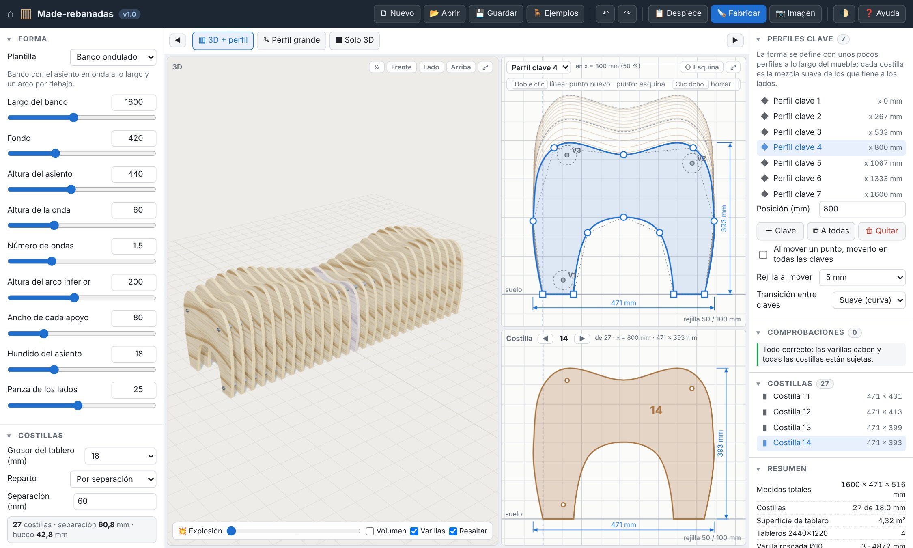
De izquierda a derecha: forma, costillas y varillas · vista 3D · editor del perfil y costilla seleccionada · perfiles clave, comprobaciones, lista de costillas y resumen.
Zona
Para qué sirve
Barra superior
Nuevo, Abrir, Guardar, Ejemplos, Deshacer/Rehacer, Despiece, Plano (PDF de montaje), Anidador, Fabricar, Imagen PNG, modo claro/oscuro y Ayuda.
Panel izquierdo
Forma (plantilla y sus medidas), Costillas (grosor, separación, material), Uniones (varillas y separadores) y Maqueta a escala.
Vista 3D
El mueble con sus costillas reales. Gira con el botón izquierdo, desplaza con el derecho y acerca con la rueda. Clic en una costilla para seleccionarla.
Editor de perfil
El perfil clave que estás editando, con sus puntos, las varillas y la silueta de todas las costillas.
Costilla
La costilla seleccionada tal y como se va a cortar: contorno, agujeros, número y medidas.
Panel derecho
Perfiles clave, comprobaciones, lista de costillas y resumen (medidas, tableros, varillas, separadores).
Los botones ▦ 3D + perfil, ✎ Perfil grande y ■ Solo 3D cambian el reparto de las vistas. Los botones ◀ ▶ ocultan los paneles laterales y los títulos de cada apartado (▾) lo pliegan.
4. Cómo se define la forma
El programa trabaja con tres ejes, en milímetros:
X, el largo: la dirección en la que se reparten las costillas.
Y, el alto, y Z, el fondo: el plano de cada costilla. En el editor de perfil, el fondo es la horizontal (u) y el alto la vertical (v).
La forma se define con unos pocos perfiles clave colocados a lo largo del mueble. Cada costilla está en una posición X y su contorno es la mezcla suave de los dos perfiles clave que tiene a los lados. Así, con 5 o 7 perfiles se obtienen 30 costillas distintas que cambian poco a poco, que es lo que da el aspecto orgánico.
Todos los perfiles clave tienen los mismos puntos (el punto 3 de un perfil se mezcla con el punto 3 del siguiente). Por eso, al añadir o borrar un punto, se añade o se borra en todos los perfiles a la vez.
Cada perfil es una curva cerrada que pasa por sus puntos. Un punto puede ser curva (círculo, pasa suave) o esquina (cuadrado). Entre dos esquinas seguidas el tramo es recto: así se hacen las bases que apoyan en el suelo.
5. Paso 1 · La plantilla
Elige primero el Tipo de mueble (costillas con varillas, retícula, radial o panel de pared): la lista de plantillas cambia con él.
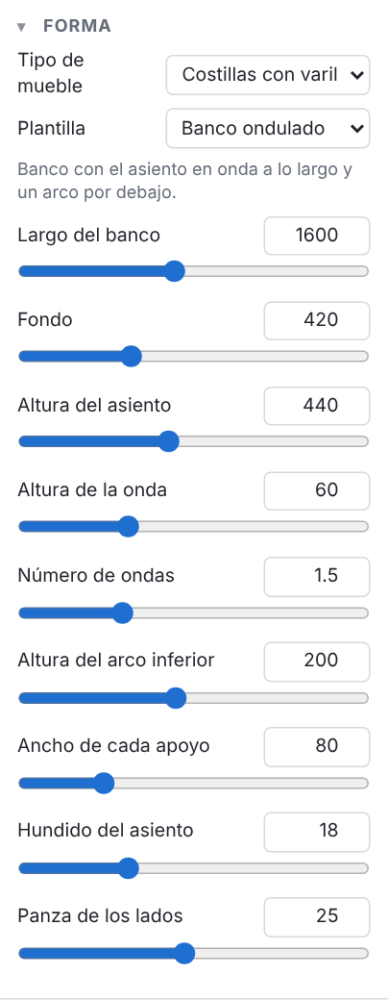
Empieza con 🗋 Nuevo o eligiendo una Plantilla en el panel izquierdo. Cada plantilla genera los perfiles clave a partir de unas medidas que cambias con el deslizador o escribiendo el número:
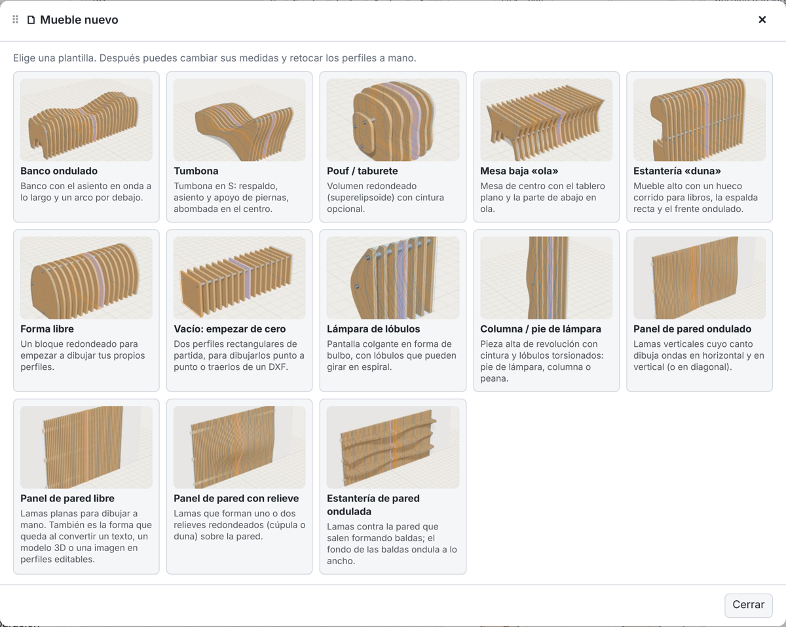
Plantilla
Medidas que se pueden cambiar
Banco ondulado
Largo, fondo, altura del asiento, altura y número de ondas, arco inferior, ancho de los apoyos, hundido del asiento y panza de los lados.
Tumbona
Ancho, largo de la cabeza a los pies, alturas del respaldo, asiento y pies, curva de las rodillas, grueso bajo el asiento y abombado.
Pouf / taburete
Largo, fondo, altura, forma (de huevo a cubo blando), cintura y base aplanada.
Mesa baja «ola»
Largo, fondo, altura, arco inferior y su variación en ola, apoyos, vuelo del tablero y curva de los lados.
Estantería «duna»
Largo, fondo, altura, ondulación del frente, profundidad, alto y altura del hueco.
Forma libre
Largo, fondo y altura de un bloque redondeado para dibujar tus propios perfiles.
Lámpara de lóbulos / Columna (radial)
Altura, radio mayor, radio abajo y arriba, altura de la panza, lóbulos, su profundidad y giro en espiral.
Panel ondulado / con relieve (pared)
Ancho y alto del panel, fondo mínimo, relieve y ondas (o posición y anchura de los relieves).
Estantería de pared ondulada (pared)
Ancho, alto, número de baldas, fondo máximo y mínimo, ondas y desfase, grueso de la balda, fondo de la lama y alto de la ménsula.
Texto o modelo 3D (pared)
Con «Origen de la forma»: texto en relieve o una figura STL/OBJ (apartado 13).
Si ya has retocado los perfiles a mano y cambias una medida de la plantilla, la forma se vuelve a generar y se pierden los retoques (el programa te avisa antes). Solo el largo se puede cambiar sin perderlos: los perfiles clave se estiran a la nueva medida.
6. Paso 2 · Retocar los perfiles
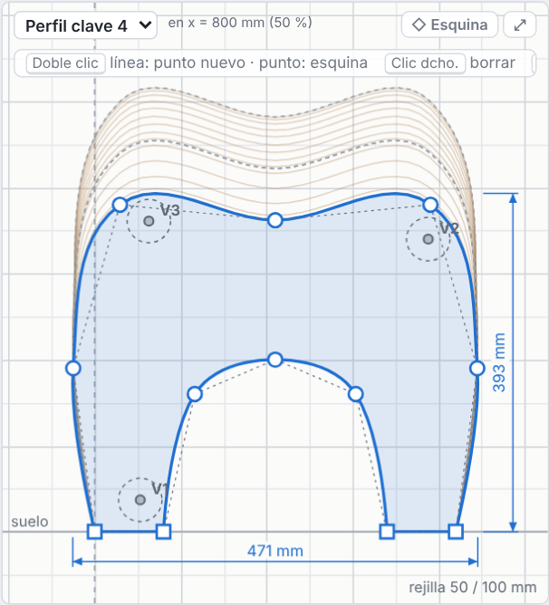
Perfil clave en azul con sus puntos (● curva, ■ esquina), otros perfiles clave en gris discontinuo, la silueta de todas las costillas en marrón claro y las varillas V1, V2, V3 con su zona de seguridad.
Qué quieres hacer
Cómo
Elegir el perfil clave
Pinchando su línea en la vista 3D (los perfiles clave se dibujan en azul y el que se edita, en naranja), el desplegable del título del editor, la lista Perfiles clave del panel derecho, o RePág / AvPág.
Mover un punto
Arrástralo. Se ajusta a la rejilla al mover (5 mm por defecto); con Mayús se mueve libre.
Mover el punto en todos los perfiles
Marca Al mover un punto, moverlo en todas las claves: el punto se desplaza lo mismo en todos los perfiles y la forma conserva sus ondas.
Añadir un punto
Doble clic sobre la línea del perfil. Se añade en todos los perfiles clave, en el mismo sitio de la curva.
Esquina o curva
Doble clic sobre el punto, tecla E o botón ◇ Esquina.
Borrar un punto
Clic derecho sobre él, o selecciónalo y pulsa Supr (mínimo 3 puntos).
Moverte por el dibujo
Arrastra en vacío para desplazar y usa la rueda para acercar. ⤢ o F encuadra.
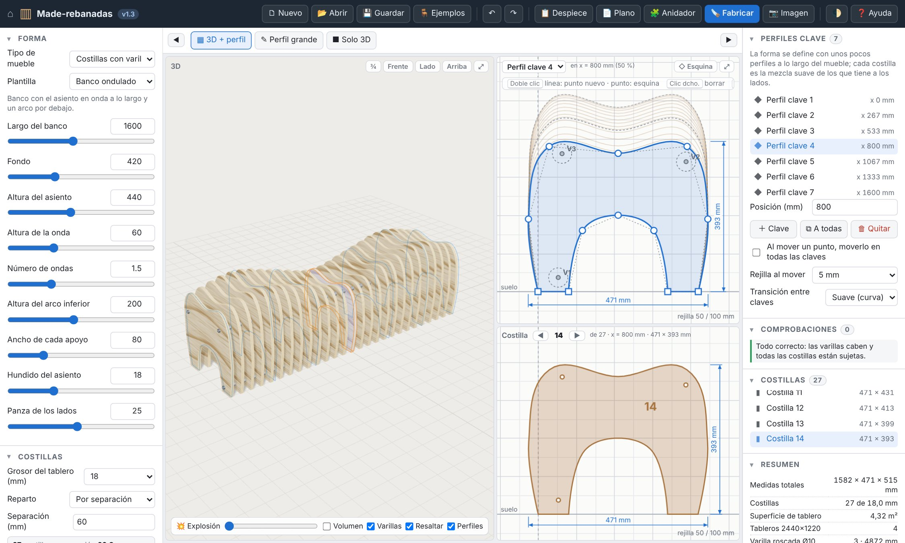
En la vista 3D, los perfiles clave son líneas azules: pincha una para editarla (se pone naranja). La casilla Perfiles de la vista 3D las muestra u oculta.
Perfiles clave
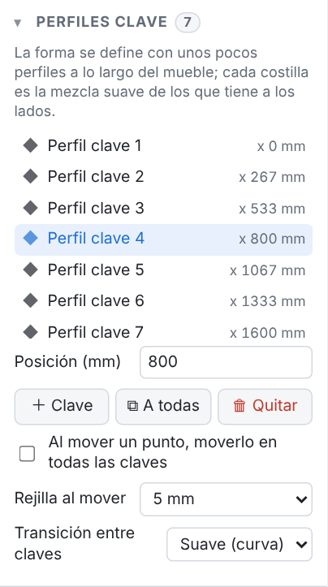
Posición (mm): dónde está el perfil a lo largo del mueble.
＋ Clave: añade un perfil clave justo en la costilla seleccionada, con la forma que ya tenía. Úsalo para retocar una zona concreta del mueble.
⧉ A todas: copia el perfil actual en todas las claves (el mueble queda igual de punta a punta).
🗑 Quitar: borra el perfil clave.
Transición entre claves: suave hace una curva que pasa por todos los perfiles; lineal va en línea recta de uno a otro.
La base de cada costilla se aplana en el suelo (v = 0) para que apoye bien, aunque la curva baje más. Con Cortar plano arriba se hace lo mismo en una altura, para un asiento o un tablero de mesa planos; la línea roja discontinua del editor marca ese corte.
7. Paso 3 · Las costillas
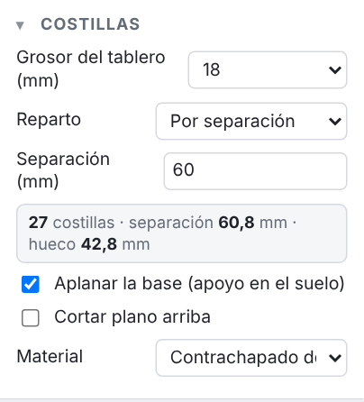
Grosor del tablero: 10 a 30 mm, u otro.
Reparto: por separación (de centro a centro, el programa ajusta el número para llenar el largo) o por número de costillas.
El recuadro gris resume el reparto: número de costillas, separación real y hueco entre ellas (separación − grosor). Con hueco 0 las costillas quedan apiladas.
Material: contrachapados (abedul, chopo, pino, chapa de roble o nogal), alistonado de pino, MDF crudo (el que sale por defecto) o MDF lacado del color que quieras.
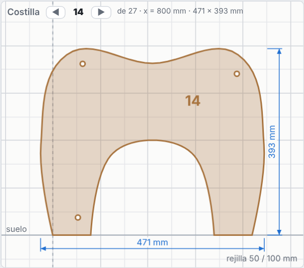
La costilla seleccionada, como se va a cortar: contorno, agujeros de las varillas, número de montaje y medidas. Cambia de costilla con ◀ ▶, las flechas ←→ o un clic en el 3D.
8. Paso 4 · Las varillas
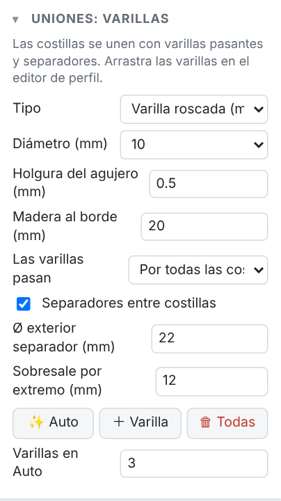
Tipo y diámetro: varilla roscada métrica (M6 a M25), espiga o redondo de madera, o tubo de acero (ver la tabla de abajo).
Holgura del agujero: cuánto más grande es el agujero que la varilla (0,5 mm: Ø 10 → broca de 10,5).
Madera al borde: lo mínimo que tiene que quedar entre el agujero y el borde de la costilla.
Las varillas pasan por todas las costillas o solo donde caben (para formas como el pouf, en las que las costillas de los extremos son muy pequeñas).
Separadores: tubos entre costillas que mantienen el hueco; su Ø exterior. Con espiga de madera no hay separadores.
Sobresale por extremo: lo que sale la varilla para la arandela y la tuerca (con tubo no cuenta: va enrasado con las tapas).
Tipo
Cómo se monta
En el 3D
Lista de compra
Varilla roscada
Separadores entre costillas; en cada extremo, arandela y tuerca (mejor ciega). Se aprieta y el mueble queda rígido. La más barata y fácil de ajustar.
Gris galvanizado con rosca, arandela y tuerca hexagonal.
Varillas, separadores, tuercas y arandelas.
Tubo de acero
Separadores entre costillas; en cada extremo, una tapa roscada (embellecedor con tornillo que rosca dentro del tubo). El tubo no sobresale. Queda más limpio que la varilla.
Acero brillante con tapas redondas abombadas.
Tubos, separadores y tapas roscadas.
Espiga de madera
Sin separadores: cada costilla se encola a la espiga, con un taco del ancho del hueco como plantilla. Todo madera; no se puede desmontar.
Espiga de madera del mismo diámetro en todo el largo.
Espigas (redondo de madera) y cola.
✨ Auto busca sitio para el número de varillas indicado: prueba miles de posiciones y se queda con las que caben en todas las costillas, lo más separadas posible (así el mueble no se retuerce). ＋ Varilla añade una: después haz clic en el editor de perfil donde la quieras. Las varillas se arrastran en el editor y se borran con clic derecho o Supr.
El círculo discontinuo alrededor de cada varilla es la zona de seguridad (agujero + madera al borde). Si una varilla se sale de alguna costilla, se pinta en rojo en el editor y en el 3D.
9. Otro tipo de mueble: retícula entrelazada
En Forma → Tipo de mueble puedes elegir entre Costillas con varillas (lo explicado hasta aquí) y Retícula (ranuras a media madera), también llamada waffle. En la retícula, además de las costillas hay unos largueros que van a lo largo del mueble y cruzan todas las costillas. En cada cruce, las dos piezas llevan una ranura hasta la mitad y encajan sin herrajes ni varillas.
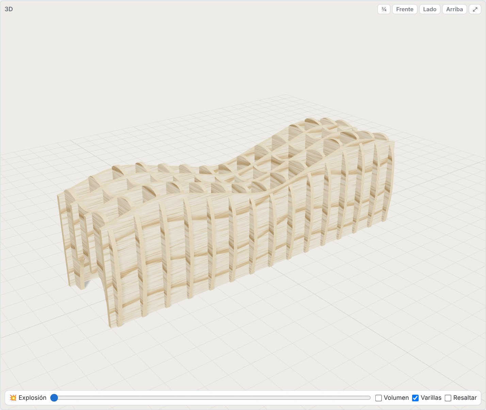
Banco en retícula: 15 costillas y 4 largueros.
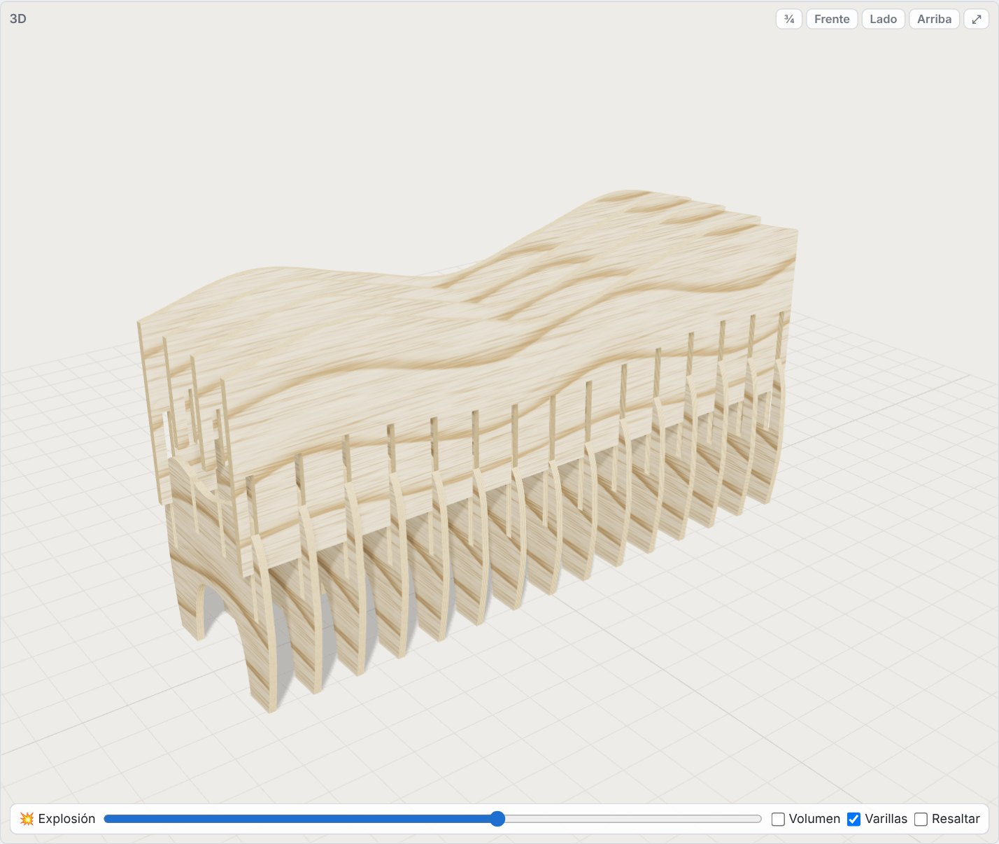
💥 Explosión en la retícula: los largueros suben para ver cómo encajan.
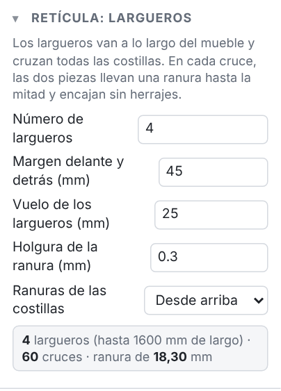
Número de largueros y margen delante y detrás: los largueros se reparten por igual en el fondo del mueble, dentro de la zona común a las costillas principales.
Vuelo: lo que sobresalen los largueros por delante de la primera costilla y por detrás de la última, para que sus ranuras no se salgan de la pieza.
Holgura de la ranura: lo que la ranura es más ancha que el tablero (0,2 a 0,5 mm en CNC; 0 a 0,2 mm en láser).
Ranuras de las costillas: desde arriba (los largueros, desde abajo, se encajan bajándolos) o al revés.
El apartado de varillas se oculta. En la lista de piezas aparecen las costillas (con número) y los largueros (con letra: A, B, C…). Si la forma tiene huecos, un larguero puede salir partido en varias piezas (B1, B2…); los trozos demasiado pequeños para encajar se quitan solos.
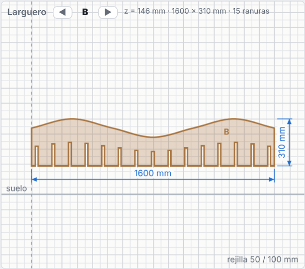
Un larguero, con una ranura desde abajo por cada costilla.
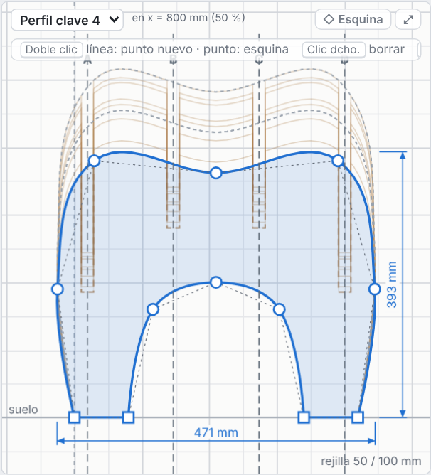
En el editor de perfil, cada larguero es una línea discontinua con su letra.
Comprobaciones de la retícula: costillas sin ningún larguero, largueros que cruzan menos de 2 costillas, cruces muy bajos (unión floja), largueros que se pisan y ranuras imposibles (cuando el borde es casi vertical en el cruce: cambia el margen o el número de largueros).
Fabricar, el DXF, el SVG, el despiece, el CSV de cortes, el Anidador y la maqueta funcionan igual, con las ranuras ya dibujadas en el contorno (capa CORTE). En la maqueta, las ranuras se hacen con el grosor de la maqueta más su holgura. El plano trae la planta de la retícula, los largueros acotados y los pasos de montaje propios:
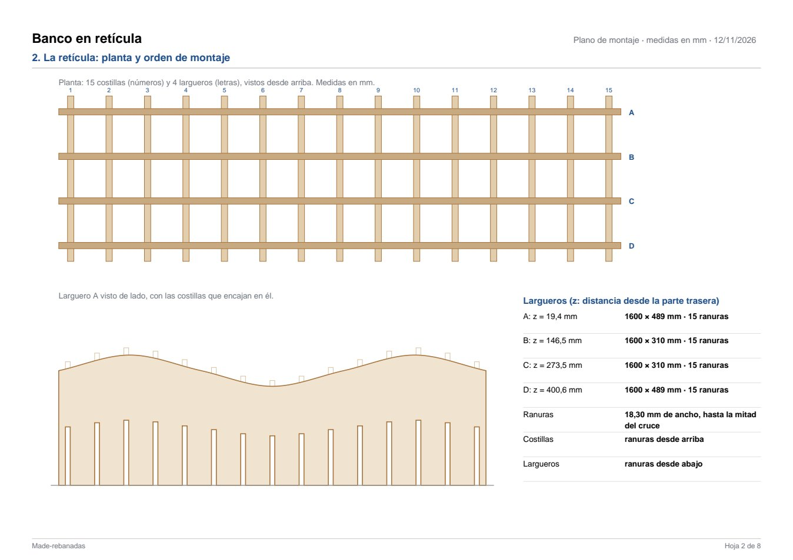
Con una fresa redonda las esquinas interiores de las ranuras quedan redondeadas y la otra pieza no llega al fondo. Activa el hueso de perro en Fabricar (sección 18): el programa lo dibuja solo con el Ø de tu fresa.
10. Planta curva (arco y S)
Con Costillas con varillas, el apartado Planta permite que el mueble siga una curva vista desde arriba. Las costillas van perpendiculares a la curva, abiertas en abanico, y las varillas la siguen.
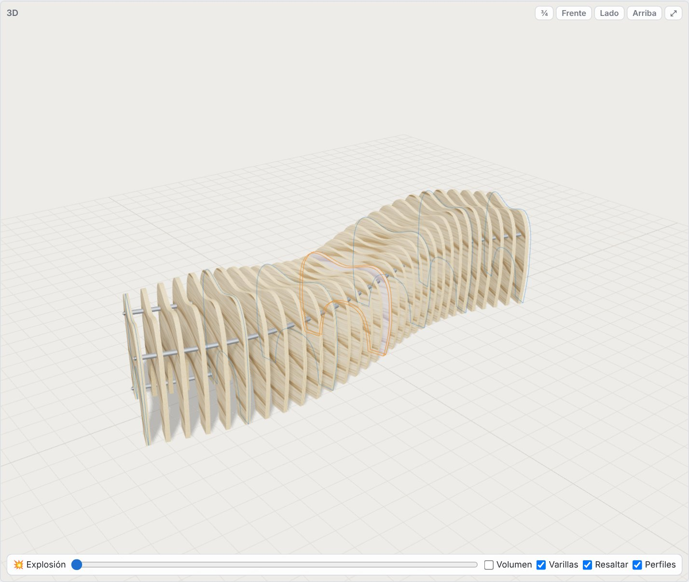
Banco en S: las costillas se abren hacia fuera de cada curva.
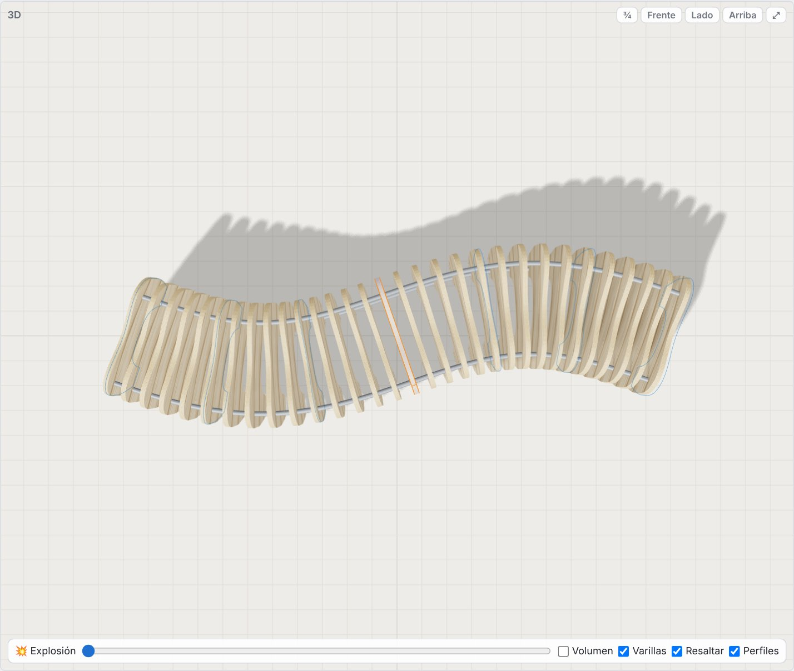
Visto desde arriba, con las varillas curvadas.
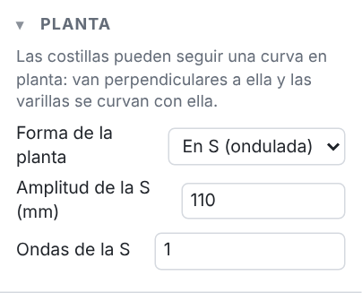
Recta: como siempre.
Arco: el eje del mueble es un arco del radio que digas, curvado hacia delante o hacia detrás. Sirve para bancos que rodean una mesa, una chimenea o un árbol.
En S: el eje ondula con la amplitud y el número de ondas que pongas.
La separación entre costillas se mide en el eje de la curva; por fuera de la curva quedan más separadas y por dentro, más juntas.
Como las costillas no son paralelas, cada separador tiene un largo distinto: el despiece da el intervalo y el plano trae la lista de todos, costilla a costilla. El programa avisa si las costillas se tocan por el lado de dentro de la curva y dice el radio mínimo al que hay que curvar cada varilla.
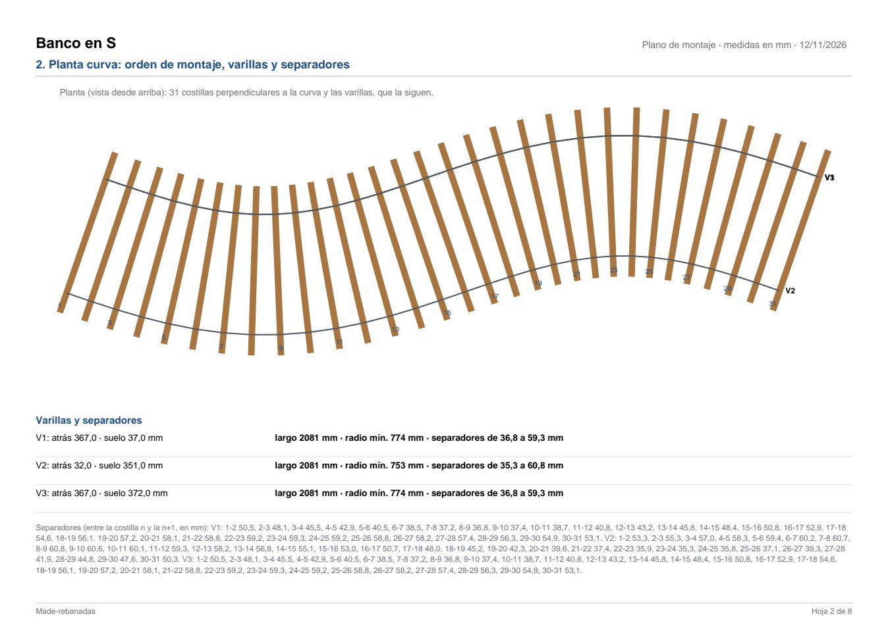
Hoja 2 del plano: planta con las costillas y las varillas, y los largos de los separadores.
Curva las varillas antes de montar, con una curvadora de tubo o a mano sobre una plantilla de tablero cortada con el mismo radio. Si la curva es muy cerrada, usa varilla más fina (M8 o M6).
11. Rebanadas radiales: lámparas y columnas
Con Tipo de mueble → Radial, las costillas no van una detrás de otra sino alrededor de un eje vertical, como los gajos de una naranja. Cada costilla es media sección de la pieza (desde el eje hacia fuera). Los perfiles clave se colocan por ángulo (de 0 a 360°), así que la forma puede cambiar al dar la vuelta: lóbulos, espirales…
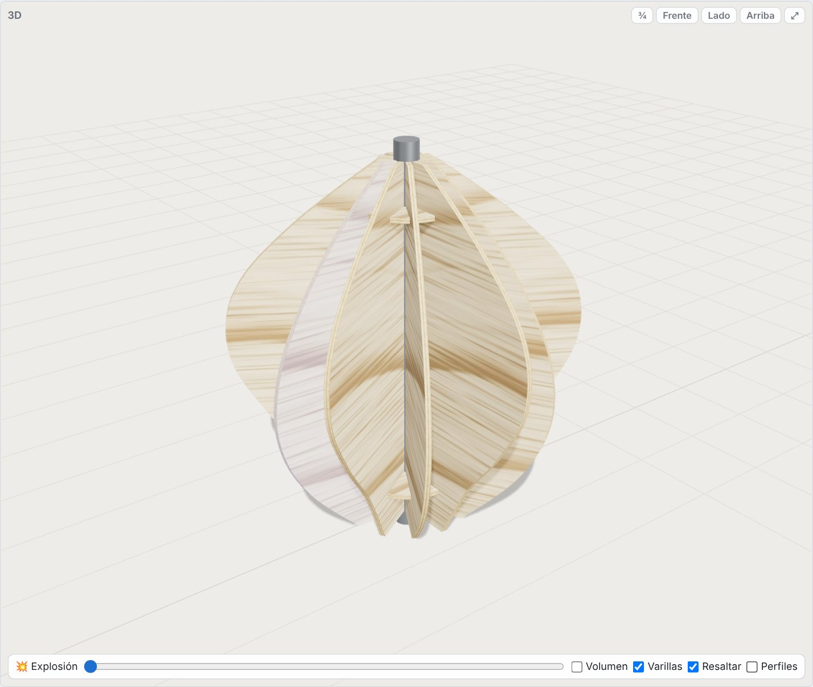
Lámpara de lóbulos: 12 costillas de 6 mm, tubo y 2 discos.
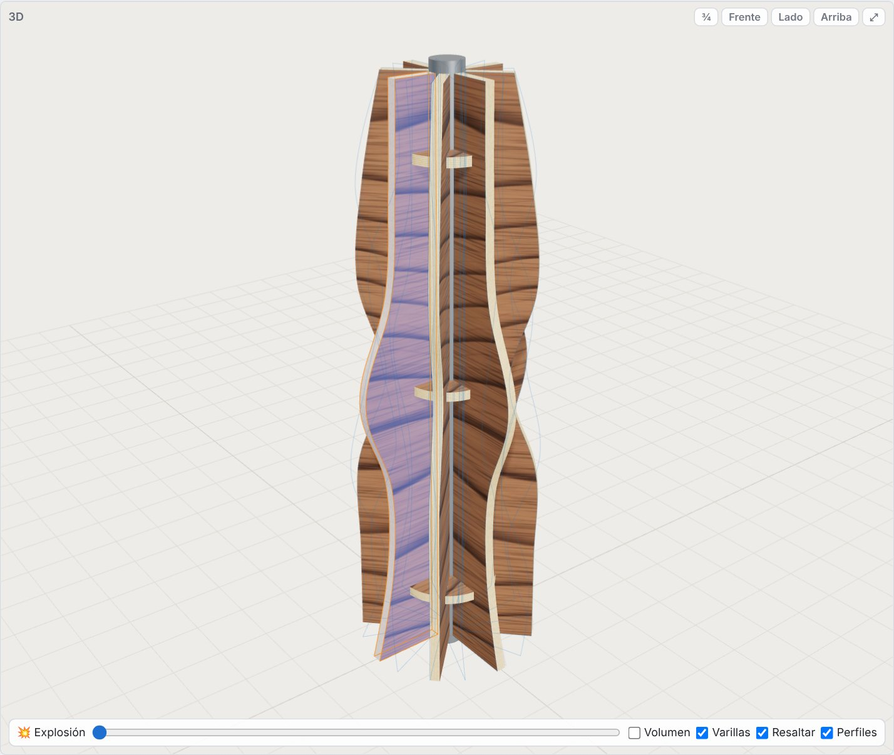
Columna torsionada: 8 costillas de 18 mm con giro en espiral.
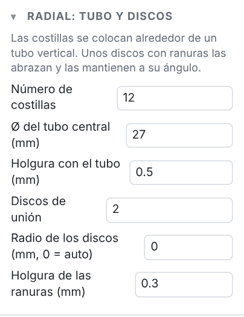
Número de costillas repartidas en la vuelta completa.
Tubo central: el borde de dentro de cada costilla se recorta a su radio (más la holgura). Si es una lámpara, por dentro va el cable.
Discos de unión: discos con una ranura por costilla. Cada costilla lleva una muesca que abraza el disco y así queda a su ángulo. Con radio 0, cada disco toma el mayor que cabe a su altura.
Plantillas: Lámpara de lóbulos y Columna / pie de lámpara, con altura, radios, panza, número y profundidad de los lóbulos y giro en espiral.
Comprobaciones: avisa si las costillas se tocan junto al tubo (y dice el tubo mínimo), si un disco sobresale de alguna costilla o si no caben los discos. La explosión separa las costillas hacia fuera.
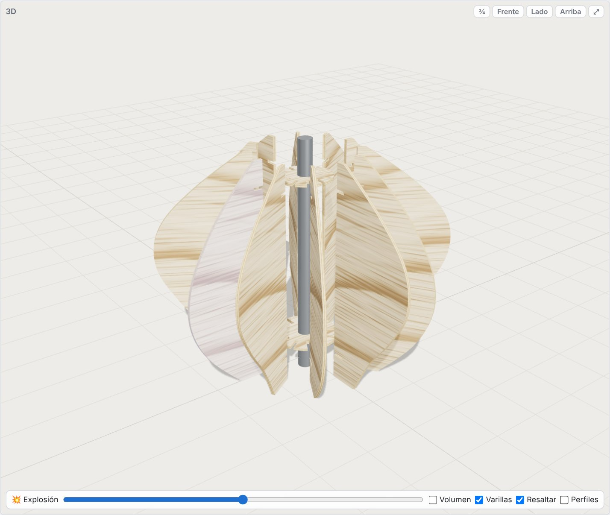
Explosión: las costillas se separan del tubo.
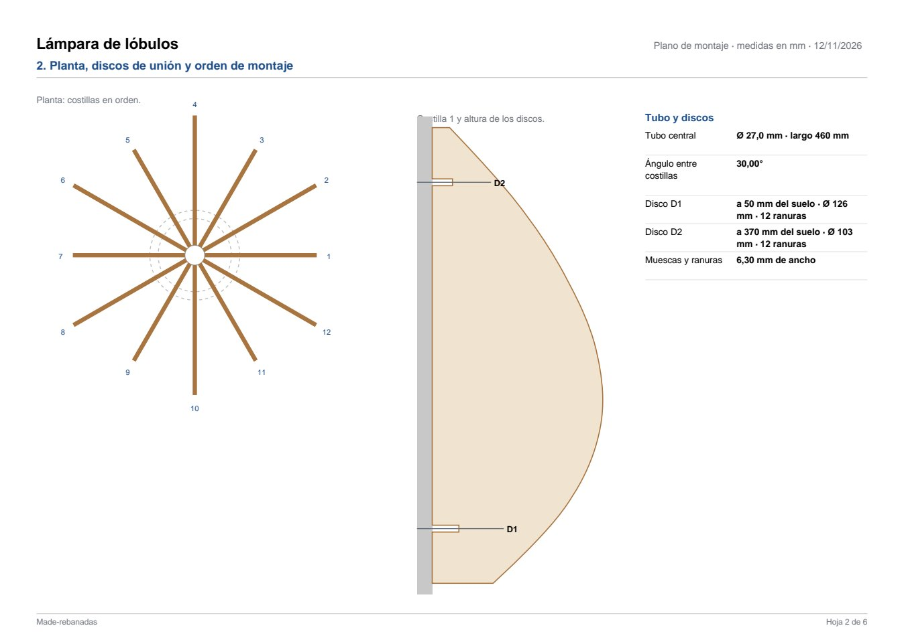
Hoja 2 del plano: planta, discos y su altura.
Para lámparas, usa tablero fino (3 a 6 mm, contrachapado de abedul) y bombillas LED, que no calientan.
12. Paneles de pared
Con Tipo de mueble → Panel de pared, las costillas son lamas verticales que salen de la pared. El canto de las lamas dibuja un relieve: ondas, diagonales o cúpulas. En el editor de perfil, u es lo que sale la lama de la pared y v la altura.
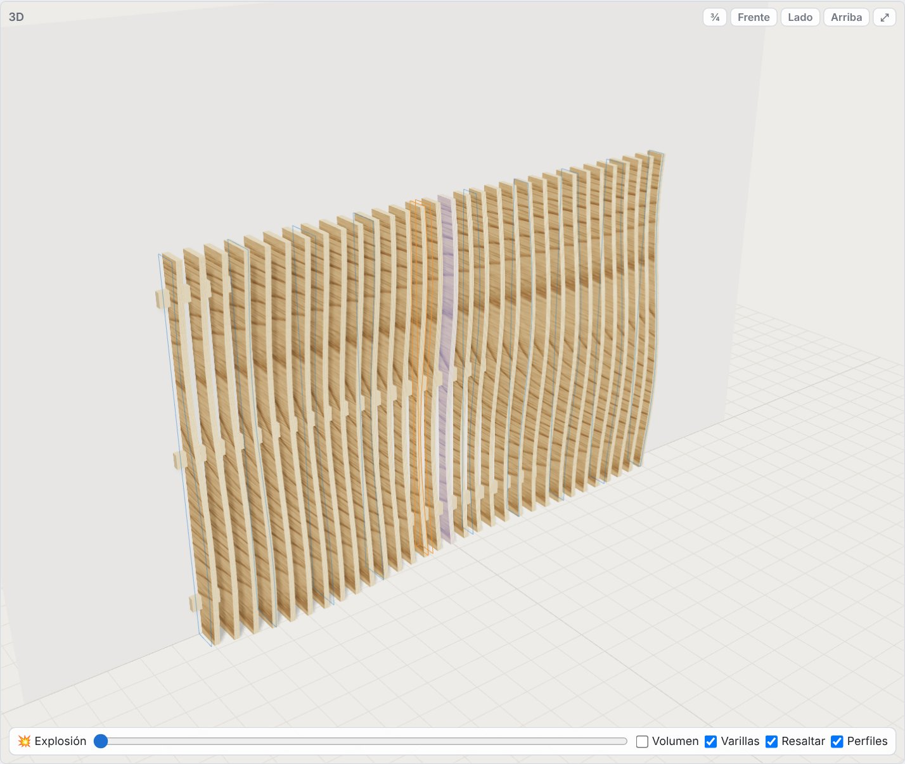
Panel de pared ondulado: ondas en diagonal sobre 3 rastreles.
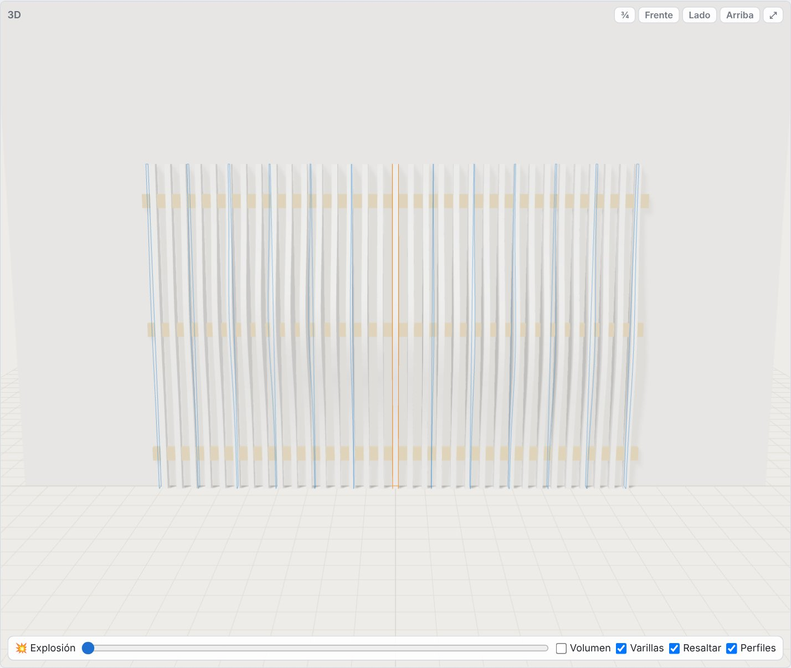
Panel con relieve: dos «dunas» redondeadas.
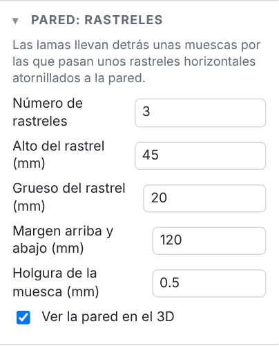
Rastreles: listones horizontales atornillados a la pared. Cada lama lleva detrás una muesca por rastrel y encaja en ellos.
Alto y grueso del rastrel, margen arriba y abajo y holgura de la muesca.
Al pasar a Panel de pared, el programa propone tablero de 12 mm y separación de 26 mm (hueco de 14 mm): las lamas juntas dibujan mejor el relieve, las letras y las baldas. Para un relieve más fino, junta más las lamas; para un panel más ligero y calado, sepáralas.
Con 0 rastreles, las lamas van sobre un tablero trasero (sale en la lista de compra).
Plantillas: Panel de pared ondulado (ondas a lo ancho, a lo alto y en diagonal) Panel de pared con relieve y Estantería de pared ondulada. Para texto y figuras, mira el apartado 13.
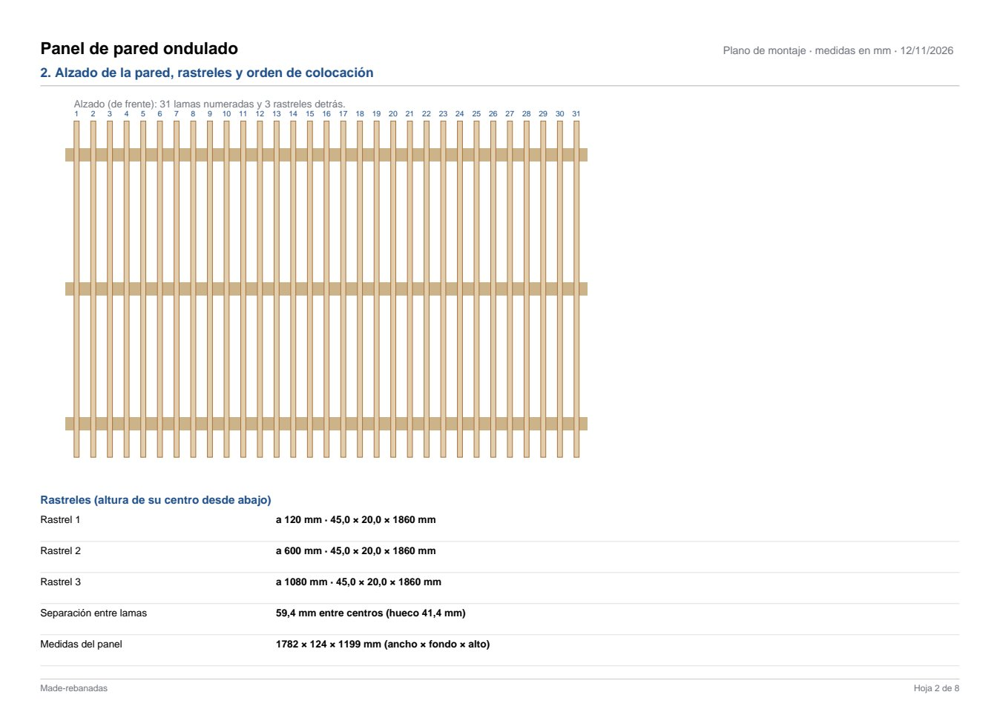
Hoja 2 del plano: alzado con las lamas numeradas y la altura de cada rastrel.
13. Figuras, rótulos y estanterías de pared
Los paneles de pared tienen tres maneras más de sacar la forma, en Forma → Origen de la forma:
Plantilla: la de siempre, con perfiles clave que se editan a mano.
Texto en relieve: escribe un nombre o un logo de texto (puede tener varias líneas). El programa lo dibuja con la letra que elijas, lo redondea con el suavizado y lo convierte en el canto de las lamas. Sirve para rótulos de tienda, nombres en la habitación o números de casa.
Imagen en grises: carga una foto, un dibujo o un mapa de alturas (png, jpg…). Lo blanco sale más y lo negro queda en el fondo; los grises, a medias. Es la forma más fácil de hacer una figura: se dibuja en cualquier programa de dibujo, con pincel difuminado.
Modelo 3D (STL / OBJ): carga una cara, un busto, unos labios o cualquier figura. El programa la mira desde la vista que elijas (frente, lado, arriba…) con el giro que quieras y saca un mapa de alturas: lo más cercano sale más de la pared. Así se hacen las caras y figuras de «arte mural paramétrico».
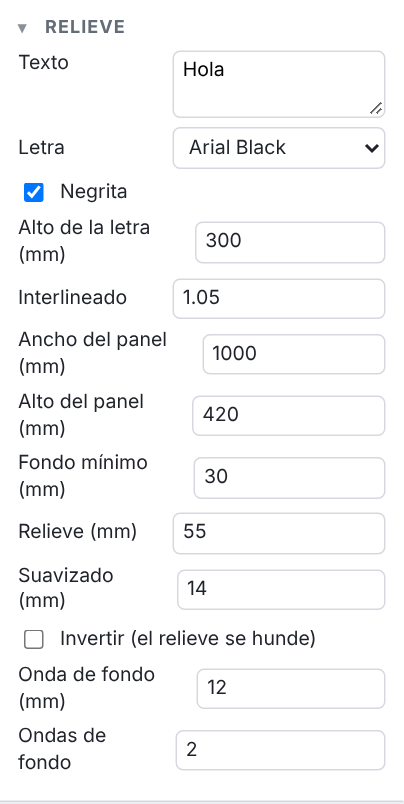
Ancho y alto del panel (mm).
Fondo: lo que sale la lama donde no hay relieve. Relieve: lo que sale de más en lo más alto de la figura.
Suavizado: redondea los bordes de las letras o de la figura (en mm). Con 0 salen escalones rectos.
Invertir: la figura se hunde en lugar de salir.
Onda de fondo (solo texto): un oleaje suave detrás de las letras.
Base (solo modelo): quita la parte más baja del modelo, para que el fondo quede plano.
Lamas: verticales o horizontales. Las horizontales dan el aspecto de las piezas de arte de líneas; los rastreles pasan a ser verticales.
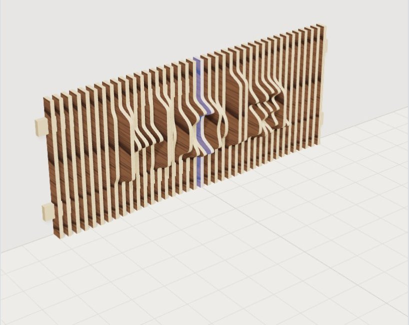
Ejemplo «Rótulo de texto en relieve»: «Hola» en nogal, con onda de fondo.
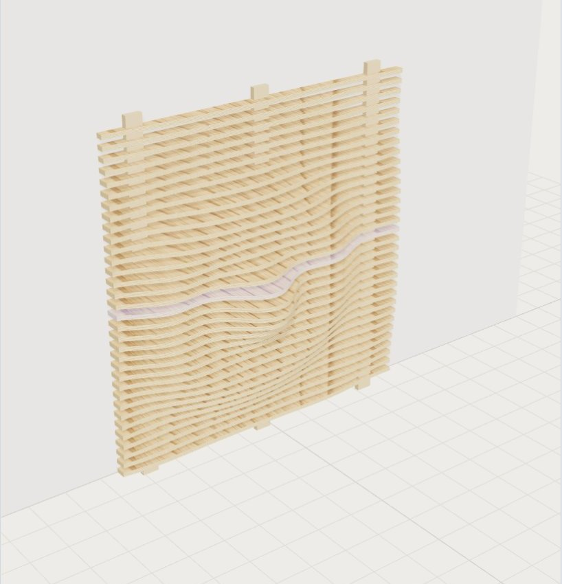
Ejemplo «Arte mural ondas»: el modelo «Ondas en el agua» en lamas horizontales.
El proyecto guarda el mapa de alturas del modelo, no el modelo entero: se abre igual en otro ordenador. Pero si quieres cambiar la vista o el giro después de abrirlo, vuelve a cargar el STL. Para caras, busca modelos de «bas-relief» o un escaneo con el móvil; un modelo de 50 000 triángulos tarda un segundo.
Modelos 3D de ejemplo
Para ver cómo funciona antes de buscar tus propios modelos, en Relieve → 🗿 Modelos de ejemplo… hay cinco STL preparados: Busto de mujer, Labios, Ondas en el agua, Anomalía (burbuja) y Nefertiti (el escaneo del busto del Neues Museum de Berlín). Al elegir uno se carga con su vista y unas medidas de panel adecuadas (si no estabas en un panel de pared, empieza uno nuevo). Después prueba a cambiar la vista, el giro, el relieve, el suavizado, la separación o las lamas, y mira cómo cambian las piezas.
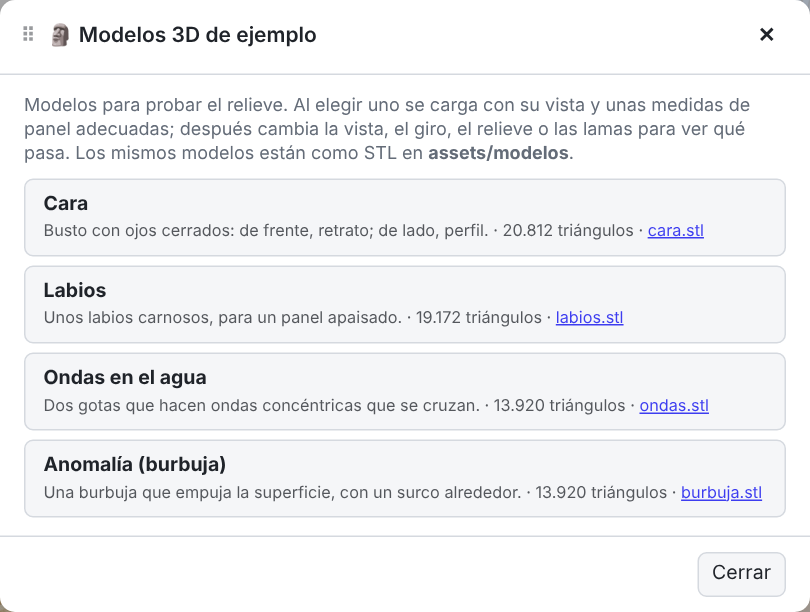
Los mismos modelos están como archivos .stl en la carpeta assets/modelos: puedes abrirlos en otro programa o usarlos de muestra en clase.
Los modelos de ejemplo se pueden volver a proyectar con otra vista aunque cierres y abras el proyecto (no hace falta volver a cargarlos).
En 🪑 Ejemplos hay cinco muebles hechos con ellos: Retrato en lamas horizontales, Labios, Arte mural «ondas», Anomalía y Nefertiti de perfil.
Licencias en assets/modelos/LICENCIAS.txt. Nefertiti es CC BY-NC-SA: vale para clase, no para vender piezas hechas con ella.
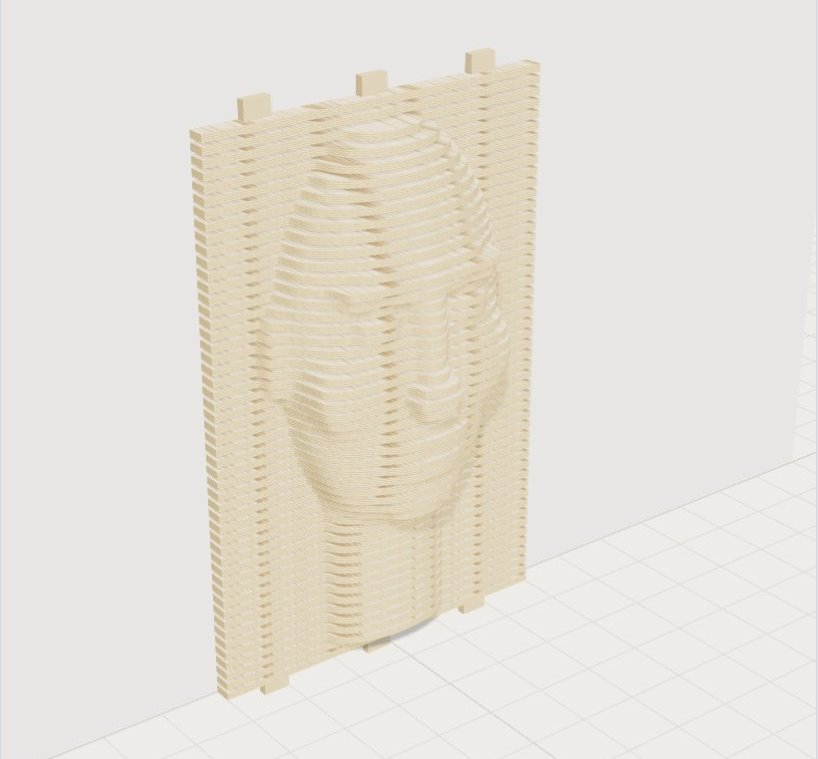
«Busto de mujer» visto de frente, en lamas horizontales.
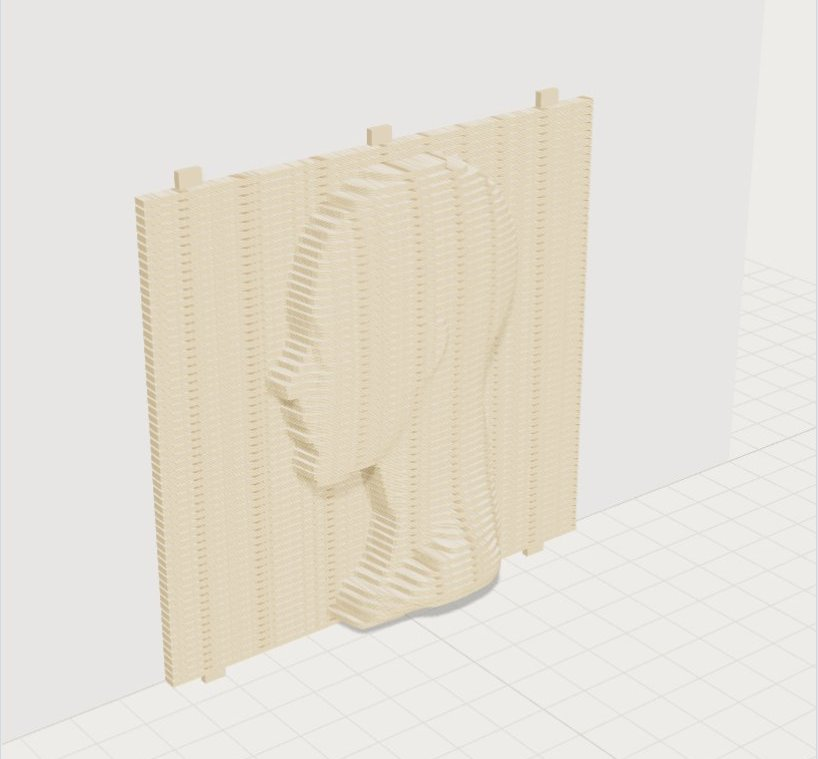
El mismo modelo con Vista: desde la izquierda: sale el perfil.
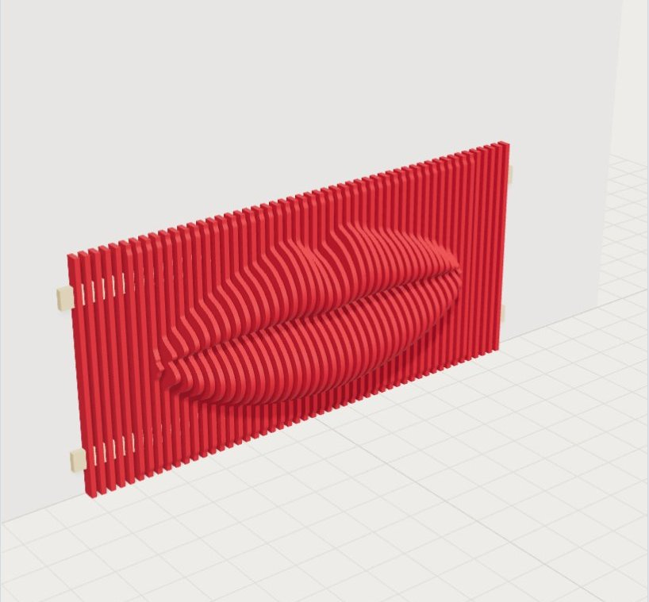
«Labios» en lamas verticales lacadas en rojo.
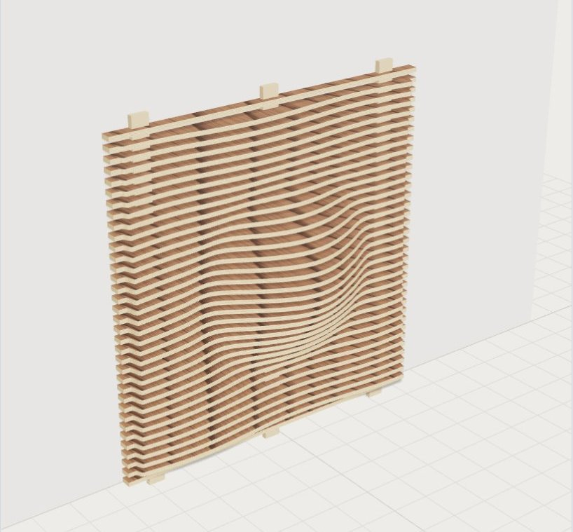
«Anomalía»: una burbuja que empuja las lamas horizontales.
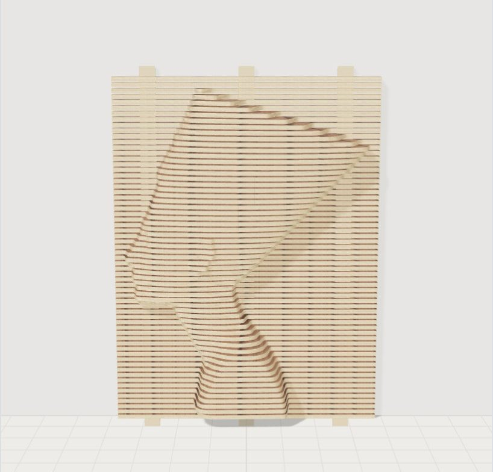
Ejemplo «Nefertiti de perfil»: el escaneo visto desde la izquierda, en 63 lamas horizontales de nogal.
Cuanto más juntas estén las lamas, más se reconoce la figura: para una cara, 12 mm cada 16 a 20 mm. Con lamas muy separadas solo se ve la forma general.
Relieve desde una imagen en grises
Con Origen de la forma: Imagen en grises el panel sale de una imagen, como un mapa de alturas. Al cargarla, el alto del panel se ajusta a sus proporciones (se puede cambiar; el botón ↕ Alto según la imagen lo vuelve a ajustar). La imagen se guarda dentro del proyecto, reducida a 600 píxeles como mucho.
Gama: con 1 el gris medio sale a media altura. Con menos de 1 (0,5) los grises salen más y el relieve se ve más lleno; con más de 1 (2) solo sale lo muy claro.
Invertir: lo negro sale y lo blanco se hunde (útil con dibujos en negro sobre blanco).
Suavizado: quita los saltos bruscos de las fotos y los bordes pixelados.
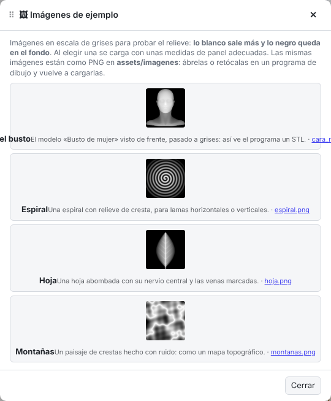
🖼 Imágenes de ejemplo… trae cuatro: Mapa del busto (el modelo «Busto de mujer» pasado a grises, para ver que un STL y una imagen son lo mismo), Espiral, Hoja y Montañas. Están como PNG en assets/imagenes: se pueden retocar en un programa de dibujo y volver a cargar.
En 🪑 Ejemplos están Espiral (desde una imagen) y Hoja (desde una imagen).
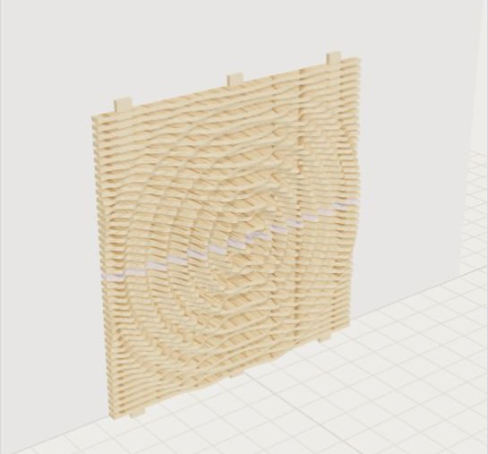
«Espiral» en lamas horizontales de roble.
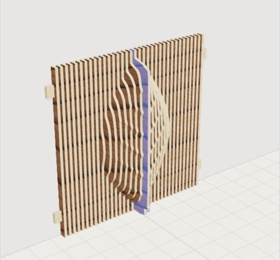
«Hoja» en lamas verticales de nogal.
Una foto normal no suele dar buen relieve: lo claro no siempre es lo que está más cerca. Funcionan mejor los dibujos hechos a propósito (blanco donde quieres que salga), los mapas de profundidad (depth map) y los mapas de alturas de terreno.
Texto añadido encima
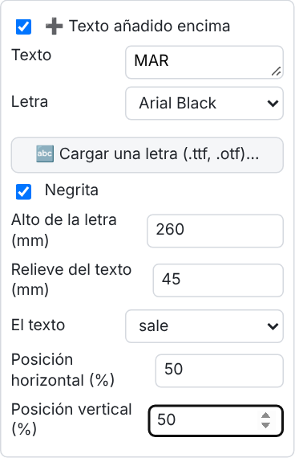
En el apartado Relieve, ➕ Texto añadido encima pone un texto sobre cualquier relieve: una imagen, un modelo 3D, las ondas de fondo u otro texto. Así se hace, por ejemplo, un nombre sobre unas ondas o una fecha debajo de un retrato.
Texto, letra, negrita y alto de la letra, como en el texto en relieve.
Relieve del texto: lo que sale (o se hunde) el texto, en mm, sumado al relieve de debajo.
El texto sale o se hunde: hundido queda como grabado.
Posición horizontal y vertical: el centro del texto, en % del panel (0 = izquierda o abajo).
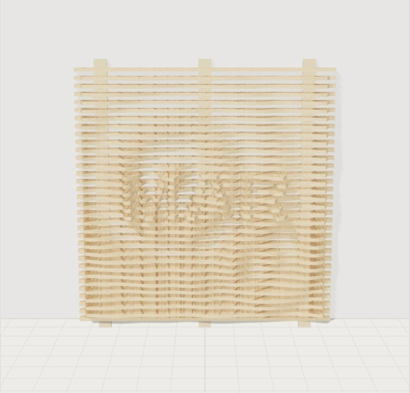
«MAR» sobre el ejemplo de las ondas, con la luz normal…
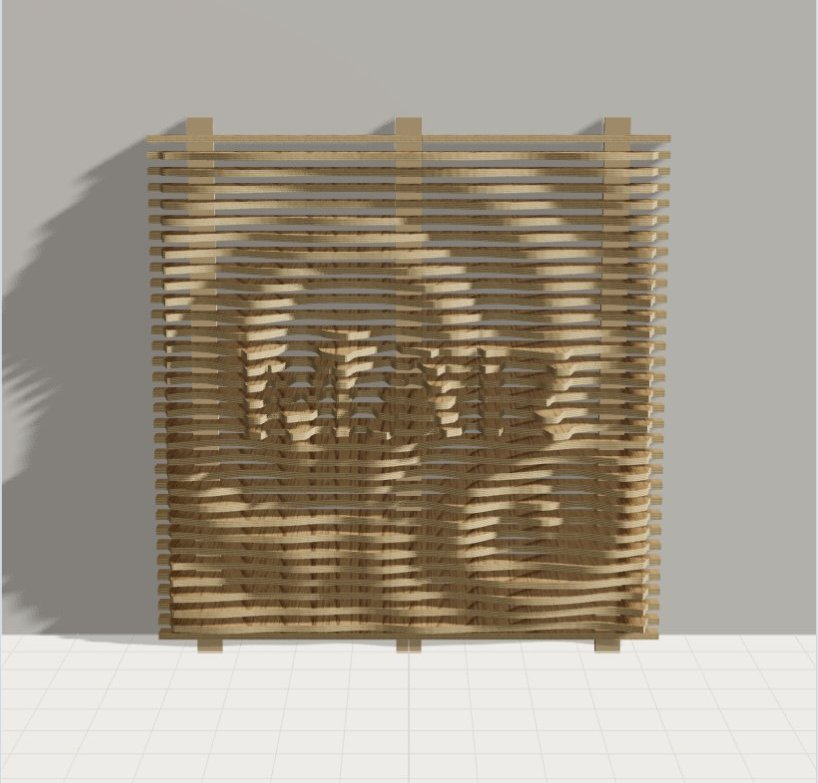
…y con Luz rasante (apartado 17): así se lee el relieve.
Letras propias (.ttf, .otf)
Debajo de cada lista de letras está 🔤 Cargar una letra (.ttf, .otf)…. La letra se añade arriba de la lista, en «Tus letras», y se guarda dentro del proyecto: el rótulo sale igual en otro ordenador aunque no tenga esa letra instalada. Hay muchas letras libres en Google Fonts o en Font Squirrel; mira su licencia si vas a vender las piezas.
Para cortar con fresa, las letras gruesas y redondeadas (tipo Arial Black o Impact) funcionan mucho mejor que las finas o con remates: los trazos finos dan lamas con entrantes que la fresa no puede hacer.
Convertir en perfiles editables
Con texto, modelo 3D, imagen o figura la forma la calcula el programa y no se pueden mover los puntos de las lamas. Si quieres retocarla a mano (suavizar una zona, cambiar un trozo, añadir un perfil…), pulsa ✏ Convertir en perfiles editables…, en el apartado Forma, justo debajo de «Origen de la forma» (solo aparece con texto, modelo 3D o imagen).
Antes de convertir se elige:
Perfiles clave: por defecto, uno en cada lama o costilla (como mucho 60), y así salen casi iguales que antes. Con menos perfiles es más fácil de editar, pero las piezas de en medio se calculan mezclando y cambian más.
Puntos por perfil: con 12 a 24 suele bastar. Se quitan primero los puntos que menos cambian la forma.
La forma pasa a Origen: Plantilla, con la plantilla Panel de pared libre. Desde ahí se editan los puntos y los perfiles como en cualquier mueble: arrastrar, doble clic para añadir, Supr para borrar, añadir o quitar perfiles, copiar un perfil en todos…
Sigue valiendo todo lo demás: lamas verticales u horizontales, rastreles, separación, grosor, fabricar y plano.
Si después hay demasiados puntos, ✂ Simplificar puntos… (en Perfiles clave) los quita a la vez en todos los perfiles, primero los que menos cambian la forma; las esquinas se quedan. Se puede deshacer con ↶. Si alguna varilla deja de caber, se recolocan solas.
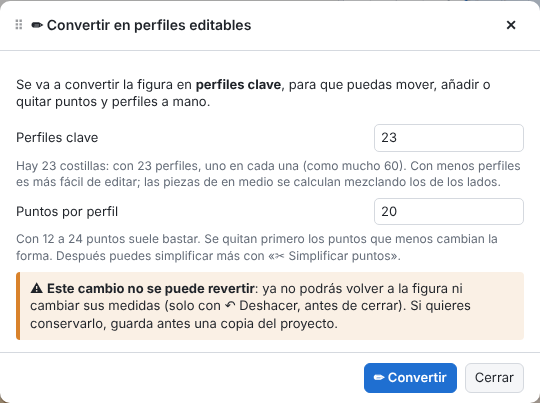
La ventana de convertir: cuántos perfiles y cuántos puntos.
⚠ No se puede revertir. Antes de convertir sale un aviso: después ya no se puede volver al texto, al modelo o a la imagen, ni cambiar su relieve, suavizado o medidas (solo con ↶ Deshacer antes de cerrar). Si quieres conservar el original, guarda antes una copia del proyecto.
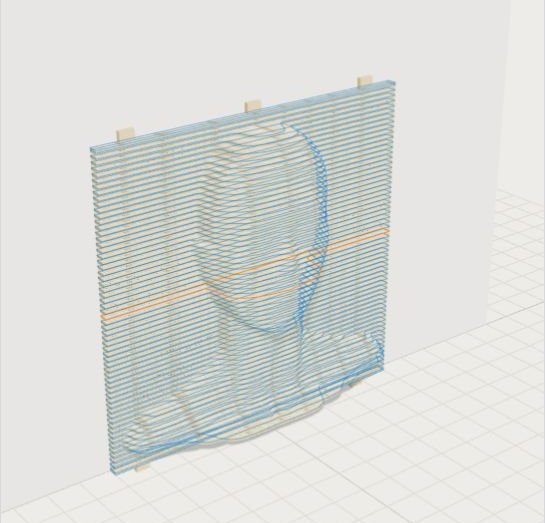
El «Retrato» convertido: un perfil clave (azul) en cada lama.
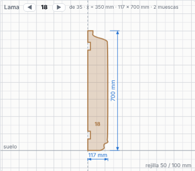
Una lama convertida, con sus puntos, lista para editar.
Estantería de pared ondulada
La plantilla Estantería de pared ondulada (en Panel de pared) hace las lamas con baldas que salen de ellas: cada lama lleva un trozo de cada balda con una ménsula inclinada debajo. El fondo de las baldas ondula a lo largo, como las estanterías de lamas que se venden hechas. Parámetros: número de baldas, fondo máximo y mínimo, ondas y desfase entre baldas, grueso de la balda, fondo de la lama y alto de la ménsula.
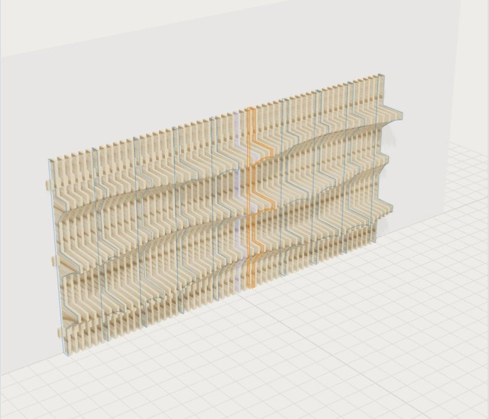
Ejemplo «Estantería de pared ondulada»: lamas de abedul de 12 mm cada 26 mm.
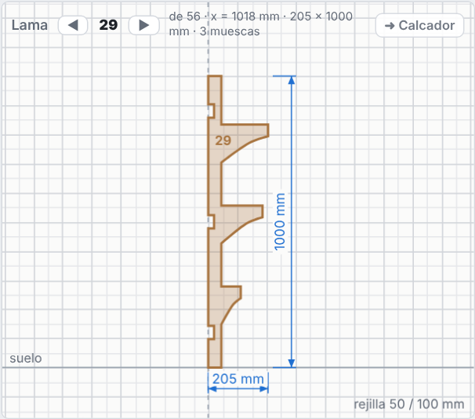
Una lama: tres baldas con ménsula y tres muescas para los rastreles.
Las baldas se forman con muchas lamas finas juntas: no cargues mucho peso (libros ligeros, plantas, objetos). Para más carga, usa tablero de 18 mm, separa menos las lamas y atornilla bien los rastreles a la pared, con taco.
14. Figuras de pie desde un modelo 3D
Con costillas con varillas o retícula, la forma también puede salir de un modelo 3D: en Forma → Origen de la forma, elige Modelo 3D (secciones). Cada costilla es un corte de verdad del modelo, como un busto o una escultura hecha de rebanadas.
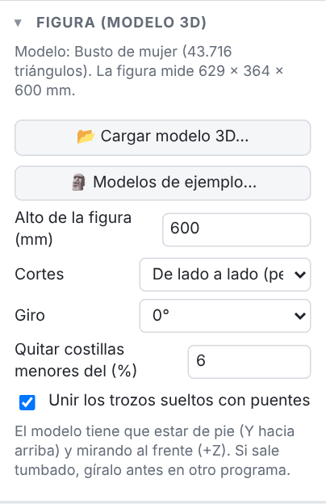
📂 Cargar modelo 3D… (STL u OBJ) o 🗿 Modelos de ejemplo… (busto de mujer, Nefertiti…). El modelo se guarda dentro del proyecto, reducido a 60 000 triángulos como mucho.
Alto de la figura: lo que mide terminada. El largo y el fondo salen solos, con las proporciones del modelo.
Cortes: de lado a lado (cada costilla es un perfil de la cara) o de delante a atrás (cada costilla es un frente).
Giro: gira el modelo sobre el eje vertical antes de cortarlo (45°, 90°…).
Unir los trozos sueltos con puentes: si un corte sale en varios trozos (la cabeza y el hombro, una oreja), se unen con un puente de madera para que sea una sola pieza. Sin marcar, solo se usa el trozo mayor.
Quitar costillas menores del (%): las de los extremos suelen ser trocitos (la punta del hombro); las más pequeñas que ese % de la mayor no se fabrican.
Ejemplo «Busto de rebanadas»: MDF de 12 mm cada 22 mm, con tres varillas de 6 mm.Ejemplo «Busto en retícula»: costillas y largueros de 6 mm a media madera.
Todo lo demás sigue igual: grosor y separación, base plana, varillas (✨ Auto las pone donde caben en todas las costillas), retícula, fabricar, DXF, plano y Anidador.
✏ Convertir en perfiles editables… también funciona aquí: pone un perfil clave en cada costilla (como mucho 60) para retocarlas a mano. No se puede revertir: el modelo se quita del proyecto.
El modelo tiene que estar de pie (Y hacia arriba) y mirando al frente (+Z), como los de ejemplo. Si sale tumbado, gíralo antes en otro programa (Blender, por ejemplo).
En retícula, las formas muy complicadas dan ranuras que no se pueden hacer (bordes casi verticales en el cruce). Prueba a separar más las costillas, poner menos largueros o cambiar el margen hasta que no salgan errores en Comprobaciones.
15. Huecos: recortes, hornacinas, baldas y armarios
Un hueco es una forma que se resta de las lamas o de las costillas. Sirve para abrir una ventana a la pared, rebajar las lamas para apoyar algo, meter una balda, una hornacina o un armario entre las lamas, o hacer un túnel a lo largo de un banco (revistero, leñero). Funciona con paneles de pared, costillas con varillas y retícula.
En el apartado Huecos (panel izquierdo) se añade uno con su forma: ▭ Rectángulo, ▢ Redondeado, ⌒ Arco (medio punto arriba), ◯ Círculo u óvalo o ✎ Libre.
Al añadir el primero se abre la vista ▦ Huecos (en el sitio del editor de perfil; el mismo botón vuelve al perfil).
Cada hueco tiene su posición (X, Y de la esquina de abajo a la izquierda), ancho, alto y, si es redondeado, radio. Se puede apagar sin borrarlo, duplicar o quitar.
Tipo de hueco:
Pasante: se quita todo (se ve la pared, o se abre un túnel en el mueble).
Rebaje (solo pared): las lamas se recortan a una profundidad desde la pared, para apoyar algo plano.
Con mueble dentro: además se dibujan y se fabrican los tableros de una balda, una caja (hornacina) o, en la pared, un armario con puerta. La holgura separa el mueble de las lamas.
En costillas y retícula el hueco se dibuja en el perfil y es un túnel que va desde xhasta x a lo largo del mueble.
La vista ▦ Huecos
En la pared se ve el frente del panel: las lamas (ya partidas), los rastreles y los muebles. En costillas y retícula, el perfil con todas las costillas.
Arrastra un hueco para moverlo; las asas lo estiran. Se ajusta a la rejilla de 10 mm (con Mayús, sin rejilla).
En la forma libre se mueven los vértices; doble clic en un lado añade uno y clic derecho en un vértice lo quita.
Rueda: zoom; arrastrar fuera de los huecos: mover la vista.
Ejemplo «Pared con hornacinas y armario»: ventana redondeada a la pared, hornacina y armario con puerta.Ejemplo «Banco con revistero»: un túnel a lo largo, forrado por dentro.
Lo que hace el programa con las piezas
Una lama o costilla cortada por un hueco puede quedar en varios trozos: se numeran 12a, 12b… y salen así en el DXF, el SVG, el Anidador, el despiece y el plano. Si el hueco queda por dentro, la pieza lleva un agujero (se corta primero el de dentro y luego el contorno).
Los rastreles se cortan donde hay un hueco pasante o con mueble.
Armario con puerta de lamas: los trozos de lama que caen delante de la puerta van pegados a la puerta («(puerta)» en el nombre) y la puerta queda escondida en el panel. Para que haya lamas delante, el fondo del armario tiene que ser menor que lo que salen las lamas.
Los tableros de los muebles tienen el mismo grosor que las lamas o costillas y salen en la hoja 3c del plano, con la lista de huecos.
Comprobaciones: el programa avisa si un trozo de lama no llega a ningún rastrel ni a un mueble (quedaría suelto), si un trozo de costilla no tiene dos varillas, si un rebaje es tan poco profundo que la muesca del rastrel se come la lama, o si quedan trozos muy pequeños. Casi siempre se arregla moviendo un poco el hueco, poniendo un rastrel más o haciéndolo con mueble.
Una costilla del banco con el túnel por dentro.
16. Comprobaciones
El programa revisa el mueble cada vez que cambias algo y lo indica en el panel Comprobaciones. Haz clic en un aviso para ir a la costilla afectada.
Aviso
Qué significa y cómo arreglarlo
Varilla que no cabe
Le falta madera alrededor en alguna costilla. Muévela hacia dentro, baja la madera al borde o usa «solo donde caben».
Costillas sueltas
No las atraviesa ninguna varilla.
Varillas demasiado juntas
Los agujeros se comen la madera entre ellos.
Separación menor que el grosor
Las costillas se pisan: sube la separación o baja el número.
Una sola varilla
La costilla puede girar sobre ella: hacen falta al menos 2.
El separador asoma
El tubo separador es más ancho que la madera que hay alrededor de la varilla.
No llegan al suelo
Información: esas costillas cuelgan de las varillas (normal en un pouf).
En la lista Costillas del panel derecho, las que tienen algún problema llevan un !.
17. La vista 3D
💥 Explosión: separa las costillas para ver el montaje.Volumen: la forma ideal, transparente, para comparar con las costillas.
Botones de cámara: ¾, Frente, Lado, Arriba y ⤢ encuadrar.
Varillas muestra u oculta varillas, tuercas y separadores; Resaltar colorea la costilla seleccionada.
📷 Imagen guarda la vista 3D en PNG a alta resolución.
Luz rasante: una luz muy baja, casi paralela a la superficie, como la de una ventana a media tarde. Es la que hace que se lean los relieves de pared y los volúmenes de las figuras. La barra de al lado gira la dirección de la luz. Se recuerda en el proyecto.
El «Busto de rebanadas» con luz rasante.
Guardar el modelo 3D (STL u OBJ)
🧊 3D, en la barra, guarda el mueble montado (sin explosión) como modelo 3D, en milímetros, para abrirlo en SketchUp, Fusion, FreeCAD, Blender… o para imprimir una maqueta en 3D.
STL: una sola malla con todas las piezas. Es el formato de la impresión 3D.
OBJ + MTL: cada pieza es un objeto aparte con su nombre (Lama 1, Costilla 3, Larguero A, Rastrel 2…) y el color de su material. Se guardan dos archivos: el .obj y el .mtl (los colores); guárdalos juntos.
Eje vertical: Z arriba para CAD e impresión 3D; Y arriba para Blender o three.js.
Escala 1: 1 es tamaño real. Para imprimir una maqueta, 10 o 20 (si la maqueta está activa, propone su escala). Abajo se ven las medidas que tendrá el modelo.
Incluir varillas, tubos y rastreles: quítalo si solo quieres las piezas de tablero.
Para imprimir en 3D a escala, comprueba que las lamas o costillas no queden demasiado finas: a 1:10 un tablero de 12 mm se queda en 1,2 mm.
18. Paso 5 · Fabricar: tableros, DXF y SVG
🪚 Fabricar coloca todas las costillas en tableros y muestra cuántos hacen falta y el aprovechamiento. Puedes elegir:
Tablero: medidas habituales (2440 × 1220, 2500 × 1250, 1525 × 1525 de abedul báltico…) u otras.
Margen al borde y separación entre piezas: deja al menos el diámetro de la fresa más unos milímetros.
Permitir girar 90°: aprovecha mejor el tablero, pero la veta de la cara queda girada en esas piezas.
Grabar el número de cada costilla, para montarlas en orden.
En fila (sin tablero): todas las costillas seguidas, para colocarlas tú en otro programa.
El DXF (versión R12, la que abre cualquier programa) está en milímetros y lleva cuatro capas:
Capa
Contenido
Mecanizado
CORTE
Contorno de cada costilla (polilínea cerrada)
Contorneado exterior, profundidad = grosor
TALADROS
Agujeros de las varillas (círculos)
Taladrado o vaciado interior
GRABADO
Número de cada costilla (texto)
Grabado de 0,5 a 1 mm, o rotulador
TABLERO
Borde del tablero
Solo de referencia
El SVG tiene lo mismo, en milímetros, para la cortadora láser o para imprimir plantillas a escala 1:1.
Opciones de CNC
Ø de la fresa: la de corte. En la maqueta tiene su propio valor (0 en láser).
Hueso de perro en ranuras y muescas: en cada esquina interior de las ranuras de la retícula, las muescas de los discos y las de los rastreles, un arco del radio de la fresa que pasa por la esquina. Así la fresa llega al rincón y la otra pieza entra hasta el fondo. Solo se hace en ranuras y muescas, no en el dibujo del mueble.
Contornos con arcos: el contorno sale en rectas y arcos (en el DXF, polilínea con bulge; en el SVG, arcos) en lugar de cientos de tramos rectos. El programa de CNC queda mucho más corto, con G02/G03, y la fresa avanza más suave.
Tolerancia de los arcos: lo que se puede separar el arco de la curva dibujada (0,05 mm por defecto).
Debajo, la ventana dice cuántos huesos de perro se han hecho, si alguno no cabe (ranura más estrecha que la fresa) y cuántos tramos y arcos tiene el contorno.
Fondo de las ranuras de un larguero, con el hueso de perro en cada esquina.
⬇ CSV de cortes guarda una línea por costilla (nombre, largo y ancho de su rectángulo, cantidad y veta) con el mismo formato de despiece que lee el Anidador y que abre cualquier hoja de cálculo. 🧩 Anidador abre el Anidador con las costillas por su forma real (sección 22).
Taladra y vacía los agujeros antes que el contorno: si cortas primero la pieza, se puede mover al hacer los agujeros. Deja puentes (pestañas) si la pieza es pequeña.
19. Despiece y lista de compra
📋 Despiece muestra todas las costillas (posición, ancho, alto, superficie y agujeros) y la lista de compra: tableros, varillas con su largo, separadores con su número y largo, tuercas y arandelas y la broca de los agujeros. ⬇ Despiece (CSV) la guarda para abrirla en una hoja de cálculo y ⬇ CSV de cortes guarda la lista de cortes para el Anidador. Si está activa la maqueta, todo sale con las medidas de la maqueta.
20. Maqueta a escala
Antes de gastar tableros, corta una maqueta: por ejemplo, a escala 1:5 en DM de 3 mm con la cortadora láser y palillos de bambú como varillas.
Marca Fabricar como maqueta en el panel izquierdo y elige la escala (1:2 a 1:20).
Pon el grosor del tablero de la maqueta, el Ø de la varilla y la holgura del agujero (0,2 mm en láser).
El recuadro resume la maqueta: medidas, separación y hueco, costilla mayor y tableros.
Con la maqueta activa, Fabricar (con la etiqueta 1:5 en el botón), el DXF, el SVG, el despiece, el CSV de cortes, el plano y el Anidador salen a escala, con tableros de láser (600 × 400, 900 × 600, A3…). Los archivos llevan _maqueta_1-5 en el nombre. El 3D y el panel Resumen siguen a tamaño real.
Comprobaciones de la maqueta: avisa si las costillas se pisan (grosor de la maqueta mayor que la separación a escala), si queda menos de 1,5 mm de material alrededor de un agujero, y si el grosor no es proporcional al del tablero real (la maqueta se verá más llena o más calada que el mueble).
21. Plano de montaje en PDF
📄 Plano descarga un PDF apaisado (A4) para llevar al taller. Lleva:
Conjunto: el mueble en 3D, sus datos y la lista de compra.
Orden de montaje: vista lateral con todas las costillas numeradas y las varillas, el perfil con la posición de cada varilla (medida desde atrás y desde el suelo), su largo y las costillas que atraviesa.
Costillas: todas, a la misma escala, con su número, medidas, posición y agujeros (8 por hoja).
Corte: los tableros con las costillas colocadas, como en Fabricar.
Montaje paso a paso y herramientas.
Hoja 1: conjunto, datos y compra.Hoja 2: orden de montaje y varillas.
Si está activa la maqueta, el plano sale con las medidas y los pasos de la maqueta.
22. Anidador de tableros
El Anidador dentro de Made-rebanadas, con las costillas de una maqueta 1:5 colocadas por su forma real.
🧩 Anidador (en la barra o en la ventana Fabricar) abre el Anidador de tableros de la Suite CNC dentro del programa. Le llegan solas todas las costillas, cada una con su contorno exterior y los agujeros de las varillas, y las medidas, el grosor y el margen del tablero de Fabricar. Coloca las piezas por su forma real: encaja unas en los huecos de otras y aprovecha mucho mejor el tablero que la colocación de Fabricar.
Elige la fresa y la holgura: la separación entre piezas es su suma.
Puedes mover, girar o fijar (📌) piezas a mano, y cambiar el tablero.
Desde el Anidador guardas cada tablero en DXF, SVG, PNG o como proyecto del Calcador (.json), y el despiece con el coste en CSV.
✕ Volver a Made-rebanadas cierra el Anidador. Al volver a abrirlo recibe de nuevo las costillas, con los cambios que hayas hecho en el mueble.
El Anidador es un programa aparte de la Suite CNC: está en assets/anidador/anidador.html y también se puede abrir solo. Tiene su propia ayuda (❓).
23. Guardar, abrir y ejemplos
💾 Guardar (Ctrl+S) descarga el proyecto en un archivo .json con todo: perfiles, costillas, varillas y material. 📂 Abrir lo carga de nuevo.
↶ ↷ (Ctrl+Z / Ctrl+Y) deshacen y rehacen.
🪑 Ejemplos: banco ondulado de abedul, banco largo de pino, tumbona de jardín, pouf redondo, mesa baja lacada y estantería duna; en retícula, banco, mesa baja y pouf; banco en S y banco curvo en arco; lámpara de lóbulos y columna torsionada; paneles de pared (ondulado, con relieve, estantería, rótulo de texto, arte mural, retrato, labios, anomalía, espiral y hoja).
24. Atajos de teclado
Tecla
Acción
Ctrl+Z / Ctrl+Y
Deshacer / rehacer
Ctrl+S
Guardar el proyecto
E
Punto seleccionado: esquina / curva
Supr
Borrar el punto o la varilla seleccionados
←→
Costilla anterior / siguiente
RePágAvPág
Perfil clave anterior / siguiente
F
Encuadrar todas las vistas
Mayús al arrastrar
Mover sin ajustar a la rejilla
Esc
Cancelar la colocación de una varilla y quitar la selección
25. Consejos de taller
Corta antes una maqueta (sección 20): es barata, se hace en minutos con la láser y descubre los fallos de forma y de montaje.
Comprueba el grosor real del tablero con el calibre: un contrachapado «de 18» puede medir 17,5. Pon ese valor (Grosor → Otro…).
Para un asiento, una separación de 2,5 a 3,5 veces el grosor queda bien y no pellizca. Para apoyar objetos, mejor más juntas.
Con 3 varillas repartidas en triángulo el mueble no se retuerce. En bancos largos (más de 2 m), pon 4.
Los separadores pueden ser tubo de acero, tubo de PVC o casquillos de madera hechos en el torno, todos del mismo largo (el hueco).
Aprieta las tuercas poco a poco y por igual, alternando las varillas, como las ruedas de un coche.
Lija los cantos de las costillas antes de montar: después no se llega bien a los huecos.
26. Limitaciones de esta versión
La retícula solo se hace en planta recta. En la retícula, las costillas son perpendiculares al largo y los largueros paralelos a él (no hay ángulos libres).
En la planta curva, las varillas se dibujan curvadas: hay que curvarlas en el taller al radio que indica el plano.
Los arcos del DXF aproximan las curvas dibujadas (que no son arcos de verdad) con la tolerancia que pongas; los arcos de la pieza no coinciden con los puntos de control del perfil.
La colocación de Fabricar usa el rectángulo que envuelve cada costilla; para encajarlas por su forma, usa el Anidador.
Las varillas son rectas y paralelas al largo del mueble.
En las figuras de pie, cada costilla es una sola pieza: los huecos de dentro se rellenan y los trozos sueltos se unen con puentes o se quitan.
Las letras del texto en relieve son las que tiene instaladas el ordenador.